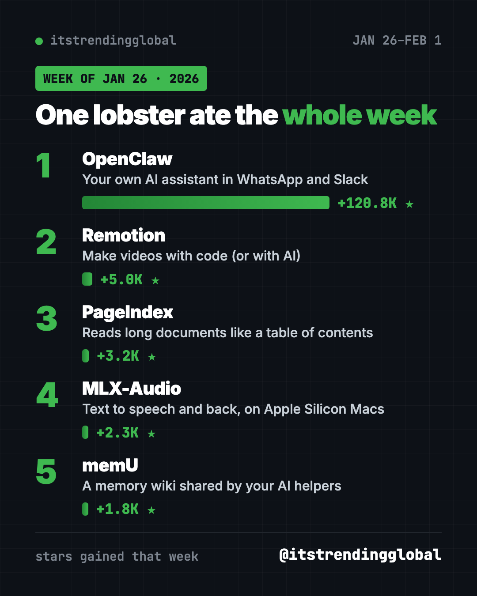
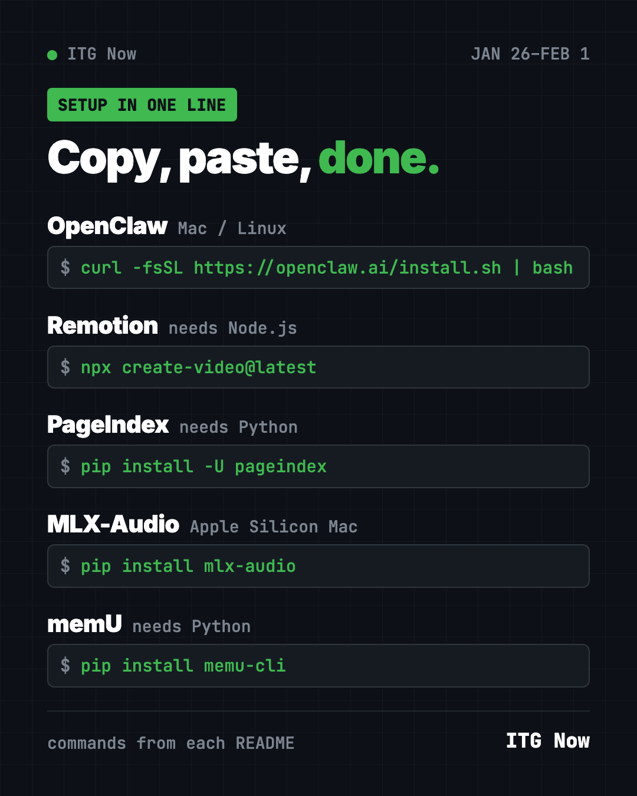
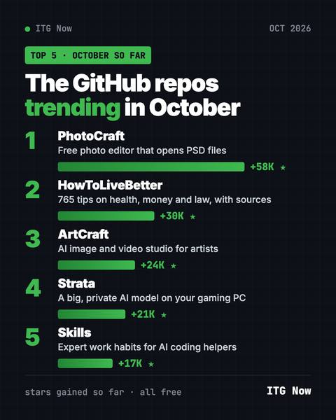
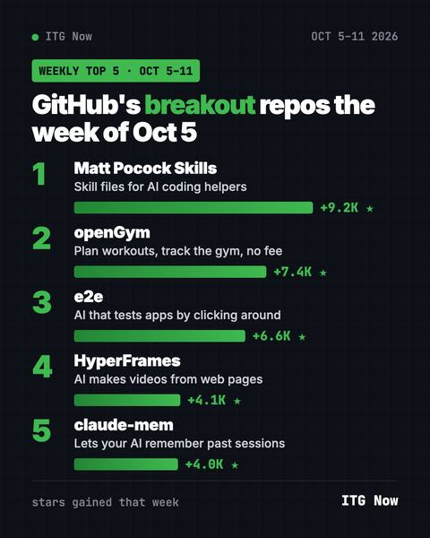
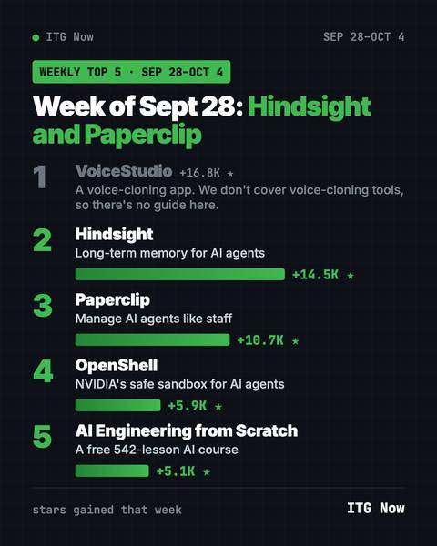

Home › Tools and repos › GitHub trending this week
GitHub Trending Repos, Week of January 26, 2026
- Published 15 Oct 2026
- Updated 16 Oct 2026
- 6 min read
- By the ITG Now team
In this guide (9)
The GitHub trending repos week of January 26, 2026 had one giant and four regulars. OpenClaw, a personal AI assistant, gained about 120,800 stars in seven days. That is more than 20 times the runner-up, Remotion.
The rest of the list is worth a look too: a video maker, a smart PDF reader, a voice tool for Macs and a shared memory for AI helpers. Each one comes with a line you can paste.
Key takeaways
- OpenClaw gained about 120,800 stars, by far the biggest jump in our January lists.
- It is an AI assistant that runs on your own computer and chats with you in apps like WhatsApp.
- Remotion and PageIndex made the top five for a second week in a row.
- MLX-Audio turns text into speech, and speech into text, on Apple Silicon Macs.
- memU gives your AI helpers one shared memory, stored like a wiki.

GitHub trending repos week of January 26, 2026 compared
| Rank | Repo | Stars gained | What it does | Works on |
|---|---|---|---|---|
| 1 | OpenClaw | +120.8K | Personal AI assistant in your chat apps | Mac, Windows, Linux |
| 2 | Remotion | +5.0K | Makes videos from code | Anywhere with Node.js |
| 3 | PageIndex | +3.2K | Answers questions about long PDFs | Anywhere with Python |
| 4 | MLX-Audio | +2.3K | Speech tools for Apple Silicon | Macs with M-series chips |
| 5 | memU | +1.8K | Memory shared across AI helpers | Mac, Windows, Linux |
Gains are for January 26 to February 1, 2026. Totals were checked on GitHub on October 16, 2026.
1. OpenClaw: the lobster that ate the week
Stars: +120.8K this week · about 392K total today
What it is: OpenClaw is a free, open source AI assistant that runs on your own computer. You talk to it in the chat apps you already use, like WhatsApp, Telegram, Slack, Discord or iMessage. Your memory and settings stay on your machine. You pick the AI model, such as Claude, Codex or a local one. Its mascot is a lobster.
Who it's for: Anyone who wants a personal AI helper they can message from their phone.
One everyday use: Text it "remind me to call the dentist tomorrow at 10" from WhatsApp.
Install it: Copy and paste this on Mac or Linux:
curl -fsSL https://openclaw.ai/install.sh | bash
On Windows, paste this into PowerShell:
iwr -useb https://openclaw.ai/install.ps1 | iex
The installer opens a setup wizard that checks your AI model and connects your chat apps.
Install OpenClaw from https://github.com/openclaw/openclaw, finish onboarding with me, and connect it to Telegram.
⚠️ Heads up: An assistant that can act on your computer needs care. Connect only the apps you need, and read what it plans to do before you approve.
See OpenClaw on GitHub · Read our full OpenClaw guide
2. Remotion: back for a second week
Stars: +5.0K this week · about 64K total today
What it is: Remotion turns code into video. That means an AI helper can make a video for you from a plain request. You can also edit with drag and drop.
Who it's for: YouTubers, teachers and small teams who make lots of short clips.
One everyday use: Turn a list of your top 5 songs of the month into an animated countdown clip.
Install it: With Node.js installed, copy and paste this:
npx create-video@latest
Make a Remotion video that counts down my top 5 songs, one per slide, 3 seconds each.
Free for individuals and teams of up to 3 people. Larger companies need a paid license.
3. PageIndex: AI that reads like a person
Stars: +3.2K this week · about 39K total today
What it is: PageIndex helps AI answer questions about long documents. It first maps the document into a tree of sections, then the AI reasons through that tree. Every answer can point back to where it came from.
Who it's for: People who deal with long reports, contracts or manuals.
One everyday use: Ask what your rental contract says about ending the lease early.
Install it: Copy and paste this, then add your own AI key:
pip install -U pageindex
Use PageIndex on my lease.pdf and tell me what it says about ending the lease early, with the section number.

4. MLX-Audio: voice tools for Macs
Stars: +2.3K this week · about 8K total today
What it is: MLX-Audio is a speech toolkit built for Apple Silicon Macs (M1 and newer). It does text to speech, speech to text, speech to speech and even music. It can clone voices and change speaking speed. There is also a web page you can use.
Who it's for: Mac owners who want free voiceovers or transcripts that run on their own computer.
One everyday use: Read a blog post aloud in a natural voice.
Install it: Copy and paste this:
pip install mlx-audio
Then try the README's example: mlx_audio.tts.generate --model mlx-community/Qwen3-TTS-12Hz-0.6B-CustomVoice-8bit --text 'Hello, world!' --voice Vivian
Install mlx-audio on my Mac and read the text in story.txt aloud with the Vivian voice, saving it as an audio file.
5. memU: one memory for all your AI helpers
Stars: +1.8K this week · about 14.5K total today
What it is: memU keeps a personal memory, stored as a wiki, that your AI helpers share. It works with Codex, Claude Code, Cursor, OpenClaw, Hermes and more. It also turns your past sessions into reusable skills.
Who it's for: People who switch between AI helpers and hate repeating themselves.
One everyday use: Tell Claude Code your writing style once, then have Codex remember it too.
Install it: The README's quick start is to get a key at memu.so and send your agent a setup message. For the command line, copy and paste this:
pip install memu-cli
Read https://memu.pro/SKILL.md and follow its instructions to install and set up memU for me.
Which one should you try first?
- You want an AI helper on your phone: try OpenClaw.
- You make videos: try Remotion.
- You have a long PDF to understand: try PageIndex.
- You own an M-series Mac: try MLX-Audio.
- You use several AI helpers: try memU.
FAQ
Why did OpenClaw gain so many stars that week?
The data shows about 120,800 new stars, but not the reason. It offers a free, open source assistant that lives in apps people already use.
Is OpenClaw safe?
It keeps your data on your own hardware, but it can take actions. Give it only the access it needs and check what it does.
Does MLX-Audio work on Windows?
No. It is built on Apple's MLX framework for Apple Silicon Macs.
Is memU free?
The project is open source under Apache-2.0, and its README describes the hosted service as free. You still need an API key from memu.so.
More from this time: the best GitHub repos of January 2026, January 2026 in AI, last week's January 19 list and the next week, February 2.
Keep reading

Trending GitHub Repos October 2026: The Top 5 So Far
The trending GitHub repos of October 2026 so far: a free Photoshop-style editor, an AI art studio, a big AI model for gaming PCs and more, explained.

Trending GitHub Repos This Week, Oct 5 2026: The Top 5
Trending GitHub repos this week Oct 5 2026: Matt Pocock's skills, the openGym workout tracker, e2e testing, HyperFrames video and claude-mem memory.

GitHub Trending September 28, 2026: Hindsight and Paperclip
GitHub trending September 28 2026: Hindsight, Paperclip, NVIDIA's OpenShell and a free 542-lesson AI course, with setup steps for each.